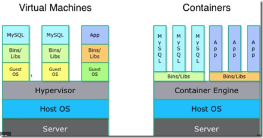

- LXC(Linux container) is an OS level virtualization for running multiple isolated Lx systems (containers) using single kernel
- LXC combines the kernel's cgroups (Control Groups) to provide isolated space for our application
- Lx kernel provides the cgroups functionality + namespace isolation --> cgroups is the brain behind the virtualization
- cgroups provides { resource limiting, prioritization, accounting and control }
- various projects use cgroups as their basis, including Docker, CoreOS, RH, Hadoop, libvirt, LXC, Open Grid/Grid Engine, Kubernetes, systemd, mesos and mesoshpere
- initial version of Docker had LXC as execution environment, but later replaced with libcontianer written in go lang
- both dockers and LMCTFY taken over the containers space and used by many companies

>>>LXC – Linux container commands
$ sudo -i {switch to root account}
$ apt update
$ free -m { check your memory availability, -m for MB, -G for GB }
$ apt install lxc { linux container, docker is based on this/type of }
$ systemctl status lxc.service
$ systemctl enable lxc
$ lxc ->tab -> tab { to see all the lxc- commands }
$ cd /usr/share/lxc/templates
$ ls { should see the list of templates }
$ lxc-create -n mylxcontainer -t ubuntu { should create ubuntu container based on the specified template}
$ lxc-ls { list the local container, ubuntu should appear with name mylxcontainer }
$ lxc-info -n mylxcontainer { should see the status as STOPPED }
$ lxc-start -n mylxcontainer
$ lxc-info -n mylxcontainer { should see the state as RUNNING }
$ lxc-console -n mylxcontainer { console login to the container, username -ubuntu, pass-ubuntu }
$ ubuntu@mylxcontainer:~$ { upon login your console prompt changes takes you to ubuntu }
$ uname -a or hostname { to confirm you are within the container }
$ Type <cntrl+a q> to exit the console
$ lxc-stop -n mylxcontainer
$ lxc-destroy -n mylxcontainer
>>>Docker container commands
$ apt update
$ free -m
$ apt install docker.io
$ systemctl enable docker
$ systemctl start docker
$ systemctl status docker
$ docker info
$ docker version
$ docker run hello-world { to pull the hello-world for testing }
$ docker ps
$ docker ps -la or $ docker ps -a { list all the containers }
$ docker search apache or microsoft { to search container by name }
$ docker images { to list all the images in localhost }
$ docker pull ubuntu
$ docker run -it --rm -p 8080:80 nginx { for nginx, -it for interative }
$ docker ps -la { list all the containers, look for container_id, type first 3 letters which is enough }
$ docker start container_id or ubuntu { say efe }
$ docker stop efe
$ docker run -it ubuntu bash
$ root@efe34sdsdsds:/# { takes to container bash }
<type cntrl p + cntrl q> to switch back to terminal
$ docker save debian -o mydebian.tar
$ docker load -i mydebian.tar
$ docker export web-container -o xyz.tar
$ docker import xyz.tar
$ docker logs containername or id
$ docker logs -f containername or id { live logs or streaming logs }
$ docker stats
$ docker top container_id
$ docker build -t my-image dockerfiles/ or $ docker build -t aspnet5 . { there is a dot at the end to pick the local yaml file for the build }
>>>for working with Azure Container
$ az acr login --name myregistry
$ docker login myregistry.azurecr.io -u xxxxxxxx -p myPassword
$ docker pull nginx
$ docker run -it --rm -p 8080:80 nginx { Browse to
http://localhost:8080 }
{To stop and remove the container, press Control+C.}
$ docker tag nginx myregistry.azurecr.io/samples/nginx
$ docker push myregistry.azurecr.io/samples/nginx
$ docker pull myregistry.azurecr.io/samples/nginx
$ docker run -it --rm -p 8080:80 myregistry.azurecr.io/samples/nginx
$ docker rmi myregistry.azurecr.io/samples/nginx
$ docker inspect -f "{{ .NetworkSettings.Networks.nat.IPAddress }}" nginx
$ az acr repository delete --name myregistry --repository samples/nginx --tag latest --manifest
$ docker run -d redis (By default, Docker will run a command in the fg. To run in the bg, the option -d needs to be specified.)
$ docker run -d redis:latest
$ docker start $(docker ps -a -q)
$ docker rm -f $(docker ps -a -q)
>>>docker minified version
$ docker pull docker.io/httpd
$ docker images
$ docker run httpd
$ docker ps [-a | -l]
$ docker info
$ docker run httpd
$ curl
http://172.17.0.2 <ctrl+c>
$ docker stop httpd
$ docker rmi -f docker.io/httpd
$ systemctl stop docker
Happy learning !
{kind=link}